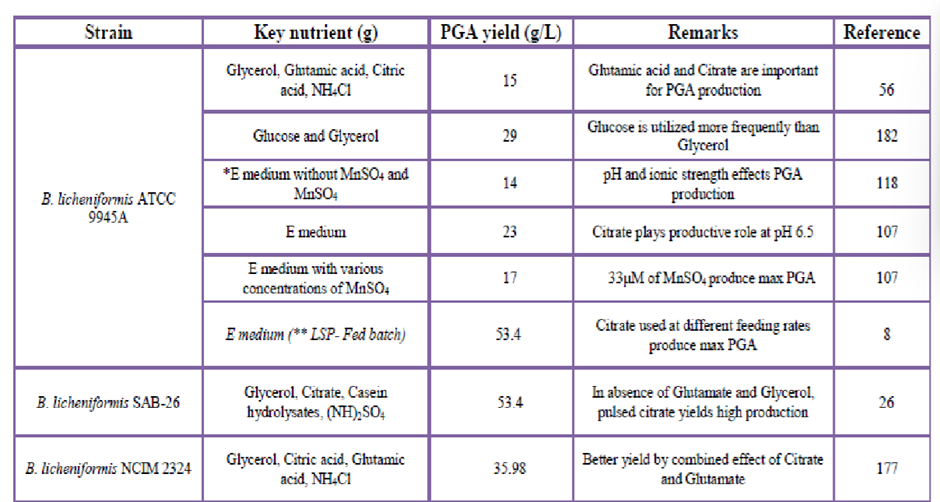
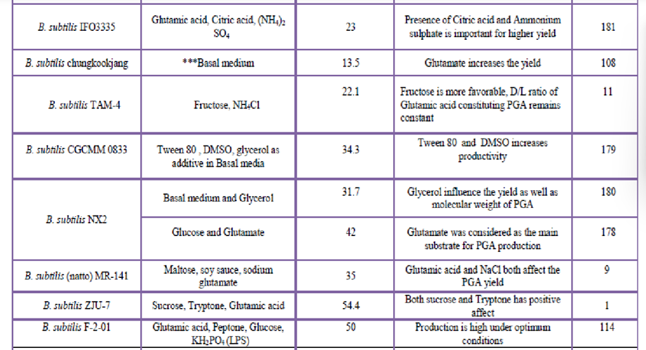
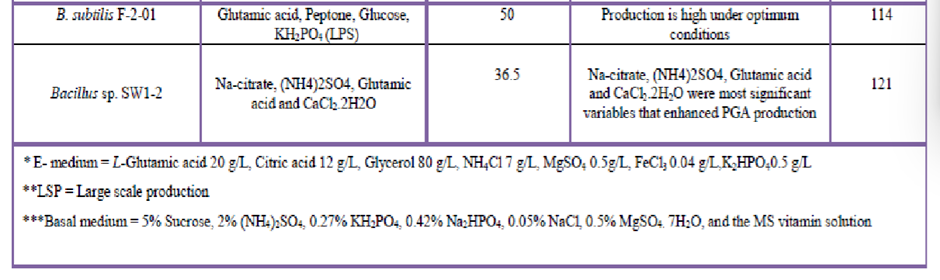
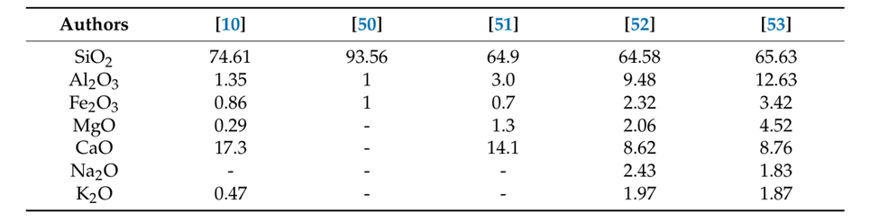

PART A: γ PGA
γ-Polyglutamic Acid (γ-PGA) Biosynthesis [1][5]
γ-PGA, a unique biopolymer, is synthesized by various microorganisms, primarily Bacillus species like B. subtilis and B. licheniformis. It consists of D- and L-glutamic acid units linked by γ-peptide bonds.
Structure [1]
Poly-γ-Glutamic acid (PGA) is a homo-polyamide consisting of D- and L-Glutamic acid monomers, which are interlinked by the amide linkages formed between the α-amino and the γ-carboxyl groups, making it resistant to proteases. PGA is an optically active biopolymer with a chiral centre in every glutamate unit. This anionic polypeptide exhibits an anomalous feature as the glutamate is polymerized via γ-amide linkage and can be readily synthesized by several microorganisms.
It was found that three types of PGA are active stereo chemicals: the homopolymer composed of D-Glutamate (D-PGA), the homopolymer of L-Glutamate (L-PGA), and the copolymer composed of D- and L-Glutamate (D-LPGA). γ-(D)-Poly-Glutamic acid, γ-(L)-Poly-Glutamic acid, and γ- (D, L)-Poly-Glutamic acid are collectively called γ-Polyglutamic acid (γ-PGA).
Fig. 1: Structure of Poly-gamma-Glutamic Acid [1]
Biosynthesis
- Ribosome-independent: γ-PGA synthesis occurs independently of ribosomes.
- Two-step process:
- Synthesis of D- and L-glutamic acid.
- Polymerization of D- and L-glutamic acid units.
- Racemization: L-glutamic acid is racemized into D-glutamic acid by glutamate racemase.
- Enzymes: Key enzymes involved include glutamate synthase, glutamate dehydrogenase, and the PgsBCA complex (encoded by pgsB, pgsC, pgsA genes).
Genetic Organization
The Bacillus group of bacteria (such as B. subtilis 168, B. subtilis (natto), B. licheniformis, and B. anthracis) and S. epidermidis possess PGA synthesizing genes. Among the Bacillus group, a specific locus has been extensively found in B. anthracis and B. subtilis, containing a well-defined and characterized sequence that encodes the Polyglutamate synthesis complex.
The PGA synthesis genes in B. anthracis are carried on the plasmid pXO2. Four genes—capB, capC, capA, and capE (encoding a 47-amino-acid peptide)—are necessary for Polyglutamate synthesis. A similar situation is observed in B. subtilis, where three genes (pgsB, pgsC, and pgsAA) were initially identified as involved in Polyglutamate synthesis.
The naming of genes encoding PGA synthesis is based on the mode of synthesis, i.e., whether it is retained or released. Genes responsible for the PGA-capsulated bacterial surface are referred to as cap (for "capsule"), while extracellularly released PGA encoding genes are referred to as pgs (for Polyglutamate synthase). The operon organization includes all the cap genes and the four pgs genes (pgsB, pgsC, pgsAA, and pgsE).
Fig. 2: The genetic organization for pga biosynthesis in B. anthracis, B. subtilis, and B. licheniformis [1]
Regulation of PGA Biosynthesis
Bacteria regulate γ-PGA synthesis through two-component signaling systems, primarily DegS–DegU and ComP–ComA. Phosphorylated DegU (DegU~P) activates over 120 genes, including those for γ-PGA synthesis. ComA–ComP signaling enhances DegQ expression, which boosts phosphate transfer from DegS to DegU, improving pgs operon transcription.
DegUP binds to the pgsB promoter, but gamma PGA production is not solely dependent on pgsB transcription. A threshold level must be reached for synthesis to occur. Additionally, SwrA, a swarming motility regulator, cooperates with DegUP, enhancing pgsB expression.
However, its exact role is unclear; it may regulate pgsB post-transcriptionally, as increased transcription alone does not ensure γ-PGA production. This complex regulatory network ensures controlled γ-PGA synthesis in B. subtilis.
Fig. 3: Schematic representation and the roles of the two-component signalling system in pgsB transcription. “P” indicates phosphoryl group [1]
Yield
  Fig. 4: PGA Producing strains with their nutrient culture condition and PGA Yield [1]
Production Methods [1]:
- Solid-state fermentation (SSF): Utilizes solid substrates like soybean cake, wheat bran, and agricultural wastes. Offers advantages like lower energy requirements and higher yields compared to submerged fermentation.
- Submerged fermentation (SmF): Microorganisms are grown in liquid media. Challenges include high viscosity, foaming, and oxygen transfer limitations.
Microbial Production [3][4][5]:
- B. licheniformis: Widely used for γ-PGA production, particularly strain NCIM 2324. Optimization of media and fermentation conditions has led to significant yield improvements.
- B. subtilis: A well-studied strain. Genetic modifications, such as knocking out γ-PGA-degrading enzymes, have enhanced production yields.
- Other Bacillus species: B. amyloliquefaciens, B. anthracis, B. thuringiensis, and B. horneckiae also produce γ-PGA, although with varying characteristics and production methods.
- Halophiles: Natrialba aegyptiaca and Natronococcus occultus are archaeal producers of γ-PGA.
- Genetic engineering: Recombinant strains have been developed by introducing γ-PGA synthesis genes into various hosts, including E. coli and Corynebacterium glutamicum.
Chemical Synthesis [4][5]:
- N-carboxyanhydride (NCA) polymerization: The most common method. Involves polymerization of γ-protected-glutamate NCA, initiated by nucleophiles or metal catalysts.
Applications [1] [5]:
- γ-PGA has diverse applications in various fields due to its unique properties:
- Biodegradable polymers Used in biomedical applications, drug delivery, and tissue engineering.
- Food industry Employed as a thickener, emulsifier, and stabilizer.
- Agriculture Used as a biostimulant, biofertilizer, and soil conditioner.
- Bioremediation Used in environmental applications for heavy metal removal and wastewater treatment.
PART B: SAND
Size and physical properties of grains [6]
More than 90% of its components have diameters between 0 and 0.4mm. Dune sand is classified as a D1 soil type by the GTR2000SoilClassification. It is described as porous, irregular, and poorly graded dirt.
The curvature coefficient (Cc) is around 0.96, while the uniformity coefficient (Cu) is 2.0.
The most often calculated component for fine aggregates is the fineness modulus which is needed to find the aggregate gradation degree of consistency. The examined dune sand samples had fineness modulus values ranging from 1.07 to 1.30. The findings show that dune sand falls short of the fine aggregate gradation criteria.
The specific gravity of desert sand can vary based on its source.
Fig.1: Specific gravities of different sand samples [7]
Chemical composition [6]
Fig.2: Chemical composition of desert sand
Dune sand is salicaceous. Traces of calcium and magnesium are found as well according to the chemical analysis report from the above table.
According to Prof. Praveen Kumar at MIT, MAHE, understanding the chemical composition is crucial. There are chances of leaching, which could prove to be detrimental to wall strength and can also lead to corrosion of reinforcements.
Slump: A key feature [8]
Concrete workability refers to the ease with which concrete can be poured to fill a given mold in a smooth and even manner. Slump flow is a way to measure this workability. A higher slump indicates higher workability.
Initially when desert sand grains are added to the mix the slump increases. This is due to the spherical shape of the grains which creates a ball-bearing effect. The spherical particles can travel more easily compared to irregular and coarser ones.
Research has shown that for dune sand substitutions over 50% slump begins to fall. This decrease is due to the fine particle nature of the dune sand grains. It can be best understood by looking at the way water interacts with the sand grains. The different ways in which water exists contribute differently to the workability.
i. Free-layer water: This is the water that moves freely around the solid particles and essentially makes the concrete workable.
ii. Adsorbed layer water: This is the water that sticks to the surface of sand grains. It reduces the workability.
iii. Filled water: Fills spaces between the sand grains. Does not have much impact on concrete flow.
Desert sand grains are fine particles. These rounded grains have a larger surface area compared to coarse grains. A large portion of water added to the mixture with d is seen as adsorbed water resulting in a drier mix with a higher slump and thus is less workable.
It was also seen that the more workable the initial mix is, the more dune sand it can accommodate without much decrease in slump.
Fig.3: A nearly sigmoid graph of desert sand grains [13]
Description: Upon iHP with Dr. Sugandhini Ma'am, we discovered it is essential for the sand of interest to present a Sigmoid graph to be of construction grade use post-modifications.
Strength-related aspects to take into account
1. Mechanical strength:
• Compressive strength [9] Studies conducted show that the compressive strength of concrete raised to a point beyond which it decreased. This can be attributed to the smooth and rounded surface of the desert sand grains which reduced the binding strength between concrete paste and dune sand. When the ratio of replacement is beyond 40% compressive capacity decreases.
To further enhance strength researchers have tried to build concrete with dune sand and metal fibers. Steel fiber in concrete increases the compressive strength of concrete by about 4 to 19%.
• Flexural strength [10] The flexural capacity increased by 20% on the substitution of dune sand. Replacing 40%-50% of dune sand with waste aggregates further enhanced strength. From previously conducted experiments we can say that the mechanical properties of dune sand were best when its replacement was 50%.
100% dune sand substitution causes a 13.7% decrease in flexural strength.
40% dune sand in concrete shows maximum flexural strength (7.47 MPa) at 28 days.
At a replacement ratio of 100 percent dune sand, flexural strength decreased by 21.3 percent when associated with blank concrete (without dune sand).
The strength of the mixture can be enhanced by the addition of steel fibers. [11]
The flexural capacity of a mixture of 20% dune sand and 1% steel fibers achieved the highest flexural capacity of 10.07MPa at the age of 28 days which is 45.3 percent higher than the reference concrete.
2. Durability [12]
• Dry density The denser the concrete the more resistant it is to external stresses.
At a 40% replacement with dune sand density increases by 1.88%. At a 60% replacement density increases only by 0.76% compared to regular concrete. Some reasons for the density increase include the spherical shape of the grain that allows the desert sand particles to better fill in the voids.
At an 80%-100% replacement with dune sand, the density of the mixture begins to decrease. This fall can be attributed to the lack of flowability. Concrete with less flowability requires more compaction energy compared to more workable concrete. Less flowable concrete has more voids and this leads to reduced density.
References
- Najar, I. N., & Das, S. (2015). Poly-glutamic acid (PGA)-Structure, synthesis, genomic organization and its application: A Review. International Journal of Pharmaceutical Sciences and Research, 6(6), 2258.
- Ogunleye, A., Bhat, A., Irorere, V. U., Hill, D., Williams, C., & Radecka, I. (2015). Poly-γ-glutamic acid: production, properties and applications. Microbiology, 161(1), 1-17.
- Park, S., Sung, M., Uyama, H., & Han, D. K. (2021). Poly(glutamic acid): Production, composites, and medical applications of the next-generation biopolymer. Progress in Polymer Science, 113, 101341. https://doi.org/10.1016/j.progpolymsci.2020.101341
- Buescher, J. M., & Margaritis, A. (2007). Microbial biosynthesis of polyglutamic acid biopolymer and applications in the biopharmaceutical, biomedical and food industries. Critical reviews in biotechnology, 27(1), 1-19.
- Elbanna, K., Alsulami, F. S., Neyaz, L. A., & Abulreesh, H. H. (2024). Poly (γ) glutamic acid: A unique microbial biopolymer with diverse commercial applicability. Frontiers in Microbiology, 15, 1348411. https://doi.org/10.3389/fmicb.2024.1348411
- Jawad Ahmad, Ali Majdi, Ahmed Farouk Deifalla, Muhammad Umair Saleem, Shaker M.A.Qaidi, Hisham Jahangir Qureshi, Mohammed A. El-Shorbagy, Concrete Made with Dune Sand: Overview of Fresh, Mechanical and Durability Properties, pg 4
- El-Sayed Sedek Abu Seif, Abdullah R. Sonbul, Geotechnical performance of sandy bricks made with fine aggregates of dunes, Saudi Arabia
- Jawad Ahmad, Ali Majdi, Ahmed Farouk Deifalla, Muhammad Umair Saleem, Shaker M.A.Qaidi, Hisham Jahangir Qureshi, Mohammed A. El- El-Shorbagy, Concrete Made with Dune Sand: Overview of Fresh, Mechanical and Durability Properties, pg 5
- Jawad Ahmad, Ali Majdi, Ahmed Farouk Deifalla, Muhammad Umair Saleem, Shaker M.A.Qaidi, Hisham Jahangir Qureshi, Mohammed A. El- El-Shorbagy, Concrete Made with Dune Sand: Overview of Fresh, Mechanical and Durability Properties, pg 6
- Jawad Ahmad, Ali Majdi, Ahmed Farouk Deifalla, Muhammad Umair Saleem, Shaker M.A.Qaidi, Hisham Jahangir Qureshi, Mohammed A. El-Shorbagy, Concrete Made with Dune Sand: Overview of Fresh, Mechanical and Durability Properties, pg 9
- Mani Mohammed, Kriker Abdelouahed, and Belferrag Allaou, Compressive strength of dune sand reinforced concrete
- Jawad Ahmad, Ali Majdi, Ahmed Farouk Deifalla, Muhammad Umair Saleem,Shaker M.A.Qaidi, Hisham Jahangir Qureshi, Mohammed A. El-Shorbagy, Concrete Made with Dune Sand: Overview of Fresh, Mechanical and Durability Properties, pg 10
- Al-Aghbari, M. Y., Mohamedzein, Y. A., & Taha, R. (2009). Stabilisation of desert sands using cement and cement dust. Proceedings of the Institution of Civil Engineers-Ground Improvement, 162(3), 145-151.